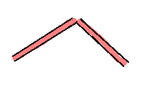

Problems - line joins
- Currently, at certain angles, small gaps appear at line joins:

- This is down to limitations with the software used to draw the maps
- Solution: explore other drawing software (e.g. ImageMagick)
- Antialiasing is not yet implemented, for the same reason